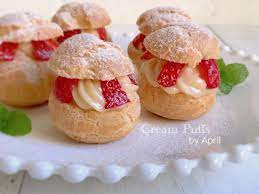
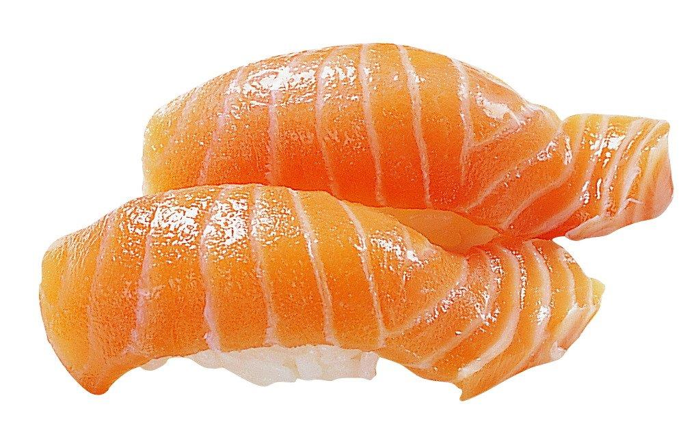
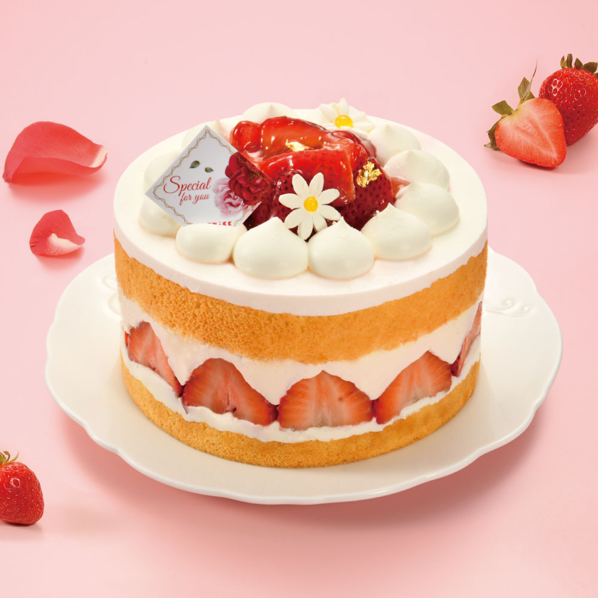

<body bgcolor="#D7FFEE">
<table bordex="0px">
<tr>
      <td></td>
      <td></td>
      <td></td>
      <td></td>

</tr>
 <tr>
       <td aling=center><a href="index.html">夏威夷披薩</a></td>
       <td aling=center><a href="2nd.html">草莓小泡芙</a></td>
       <td aling=center><a href="3nd.html">鮭魚壽司</a></td>
       <td aling=center><a href="4nd.html">法式草莓芙蓮</a></td>
</tr>

<title>鮭魚壽司</title>
<h1>鮭魚壽司材料</h1>
<h2>主要材料：</h2>
<ul>
     <li>壽司飯（醋飯）</li>
     <li>海苔（壽司巻き用）</li>
     <li>鮭魚片</li>
     <li>牛油果（酪梨）</li>
     <li>黃瓜條</li>
     <li>芝麻（炒熟）</li>
     <li>醬油</li>
     <li>芥末</li>
     <li>額外：鮭魚籽、紫蘇葉等（依個人喜好添加）</li>
</ul>

雙手沾濕。<>
取少許醋飯置於手掌中，手掌輕壓捏1個小橢圓狀的飯糰。<br>
用一隻手指沾一點山葵，塗抹在鮭魚片中央。<br>
接著將飯糰擺放於鮭魚片上。<br>
翻過來，讓鮭魚片置於飯糰之上。<br>
用兩隻手指在魚片上施點壓力，使魚片黏著於飯糰。<br>
重複上述作法，直到完成8個握壽司。<p>

</body>
</html>
